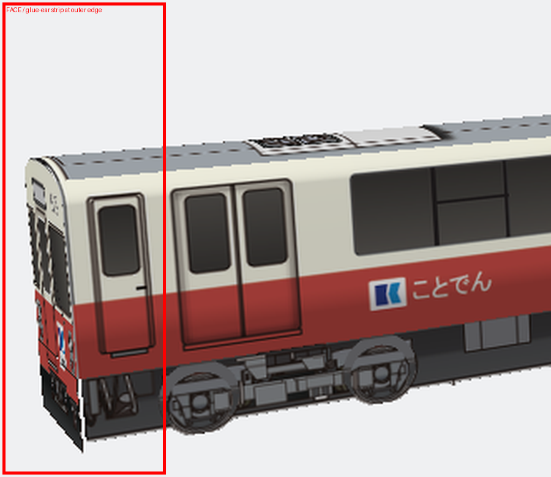
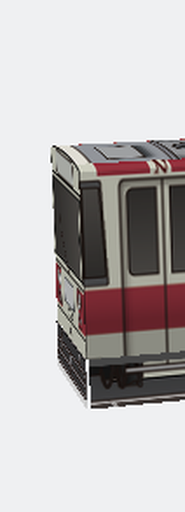
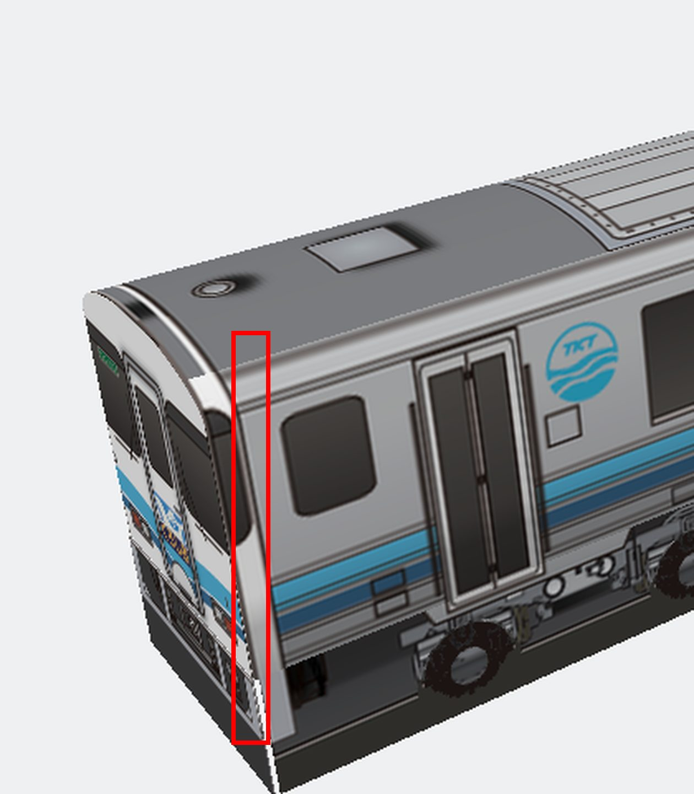

❌ ise-ise3 イセIII型 · 第 3 组

上级01:21指令：优先清单车、115专员确认两端有胶耳，判❌。正视两端：司机面两侧细白竖条（约3-5%）、在蓝带处清晰可见、延至裙板以下、两角有白翻片；斜视角亦见白条+裙下翻片。贴图5%带因风挡干扰不明显（122.7/128.8），以目检+指令为准。
(B) 批 9 辆交集优先清单中 7 辆确认、2 辆干净：✅ hiroden-1000（已推）、✅ jr-hokkaido-kiha40（staged 未推，干净 ≠ 放行，仍等 MC 回“可以推”）。以下 7 辆先修，修法同 (B) 批返工；ktr700、nagasakidenki-1200、kotoden-600 是裙板下垂型，须同时处理裙板下白片区。
上级01:21指令：优先清单车、115专员确认两端有胶耳，判❌。正视两端：司机面两侧细白竖条（约3-5%）、在蓝带处清晰可见、延至裙板以下、两角有白翻片；斜视角亦见白条+裙下翻片。贴图5%带因风挡干扰不明显（122.7/128.8），以目检+指令为准。

优先清单车（115专员抽查确认，近端）。斜视角近端司机面外侧（左）有通高薄白/奶油竖条，裙板底角下有黑色梯形片下垂；GLB端面贴图03_front/04_end1极边缘列（约2.6%宽）有白纸边+黑轮廓线、底部全黑，解释了黑片。黑片下垂型胶耳，前脸侧带亮度法不适用（e131亮度法亦未检出）。远端斜视角太小未见。

近端司机面角部有一块白片垂在裙板下（115 专员抽查确认）；端面贴图干净（front/end1 均为 0.00）——裙板下垂型胶耳（裙板源行带白纸），非面耳片。远端未见。优先清单验证车。

近端司机面右侧有白条 + 左下角裙板下有一小白片下垂；端面贴图干净（front/end1 均为 0.01）——裙板下垂型胶耳（裙板源行带白纸），非面耳片。优先清单验证车。

115专员抽查确认+我亲眼核实：斜视角近端司机面近侧有清晰亮白通高竖条、延至裙板以下、裙角有白斑，远侧边缘亦白。面贴图数值干净（边-3/0）是假阴性——白条不在面贴图上。

❌确认（优先清单车）：斜视角近端司机面左缘通高白竖条清晰（黑面衬托），裙板底角有白片；远端亦见白边线。亮度：我方定点量测左缘带中位207、车身银灰137（差+70）；e131专员量测前脸两侧带202/194（有胶耳），两者一致。

两头司机面双侧有清晰通高白条；前脸双侧白占比 0.85-0.90、亮度 234-245，end1 左侧 0.82-0.90；斜视角近端裙板下有黑色下垂片。e131 亮度 204/197 佐证。优先清单验证车。
| 车型 slug | 组 | 判定备注 |
|---|---|---|
aoimori-701 | 1 | ❌确认：两车 4 张端面纹理（front/end1 × car1/car2）两侧均有约 5% 白边（front 白化率 0.46/0.45，边亮 177/179 vs 中心 132，+47；end1 白化率 0.51/0… |
fujikyu-8500 | 1 | ❌确认（司机端 nose）：nose 纹理红鼻两侧中部各有约 8% 白三角（红带收进约 8%，风挡在上满幅），审核斜视角鼻尖两侧白三角清晰可见（红底上白斑）；end1 纹理仅底角有约 8%×10% 白三角（skirt_e… |
hansin-5001 | 2 | 两头外向司机端（car1 + car2，car2 已翻转）均有胶耳：斜视角见通高浅灰竖条 + 裙板底角白块；head-on 司机面被挤至约 65% 宽、两侧浅灰侧带；贴图 front/end1 边 240/241 vs … |
hansin-5700 | 2 | 两头外向司机端（car1 + car4）均有胶耳：斜视角见通高白竖条 + 裙板底角白块；head-on 司机面被挤窄、两侧浅灰侧带（car4 下段另有蓝色竖条）；贴图边 242 vs 中心 70/90，端面贴图可见明显白… |
hansin-9000 | 2 | 仅 car1 外向司机端有胶耳（双侧）：斜视角见通高浅白竖条 + 裙板底角白块；head-on 司机面被挤窄、两侧浅灰侧带；贴图 front 边 240 vs 中心 97。注意：car3 两端均为贯通面（渲染干净灰色），… |
hiroden-5100 | 2 | 两头外向司机端（car1 + car5）均有胶耳：斜视角见通高浅灰竖条；head-on 黑色司机面被挤至约 64% 宽、两侧宽浅灰侧板；贴图 car1 front 边 246 vs 中心 68、car5 end1 边 2… |
hokuso-7300 | 2 | 仅 car1 外向司机端有胶耳（双侧）：斜视角见通高浅灰竖条 + 裙板底角白块；head-on 黑/蓝司机面被挤至约 55% 宽、两侧宽浅灰侧板、右侧带斜折线；贴图 front 边 246 vs 中心 112。注意：ca… |
iga-860 | 3 | 正视两端：红白司机面两侧各约13%宽淡灰白竖条、通高、延至裙板；贴图前脸外5% 243.9/229.5（首）、229.6/237.9（末），中心仅136。 |
ise-ise3 | 3 | 上级01:21指令：优先清单车、115专员确认两端有胶耳，判❌。正视两端：司机面两侧细白竖条（约3-5%）、在蓝带处清晰可见、延至裙板以下、两角有白翻片；斜视角亦见白条+裙下翻片。贴图5%带因风挡干扰不明显（122.7/… |
jnr-155 | 3 | 正视两端：橘司机面两侧各约13%宽淡灰白竖条、通高、延至裙板；贴图前脸外5% 233.4/224.9，中心仅106.3。 |
jnr-kiha181 | 3 | 单节车、仅一端为司机室：正视司机面两侧各约13%宽淡灰白竖条、通高、延至裙板；贴图前脸外5% 241.5/219.9，中心134.3。另一端为贯通端（浅灰侧板、无明确白条，备注、不计入）。 |
jnr-kiha58 | 3 | 单节车、仅一端为司机室：正视司机面两侧约13%宽亮带（贴图外13% 208-219、中段与低段均亮于邻列110-154）、通高、裙下两角有白片；另一端为贯通端（备注、不计入）。 |
jr-east-165 | 3 | 正视两端：深绿司机面两侧各约13%宽纯白竖条（贴图外13% 208-255）、通高、延至裙板；贴图前脸外5% 234.2/228.7，中心仅87.1。 |
jr-east-251 | 3 | car1（近端）：前脸贴图两侧各约25%纯白梯形胶耳（255）、有梯形剪裁黑线，正视呈宽白竖条；car4（远端）仅底部两角有薄白（疑似）。 |
jr-east-415 | 3 | 正视两端：白司机面两侧约3-5%纯白竖条（贴图外3% 255）、通高（含低段）、在蓝带处清晰可见、裙下两角亮（224-225）；面外黑框线外侧即白纸边。 |
jr-east-719 | 4 | 司机面两侧约11-12%宽纸白梯形耳+折叠线，延至裙板以下；贯通端也有耳11%/10%（备注，不计入）。 |
jr-east-e233-5000 | 4 | 司机面两侧约8-12%纸白梯形耳+折叠线，延至裙板以下；贯通端也有耳~10-11%（备注）。 |
jr-east-hbe210 | 4 | 司机面两侧约5-6%纸白耳，全高含裙板以下+折叠线；贯通端也有耳6%/6%（备注）。 |
jr-freight-eh500 | 4 | 司机面两侧浅灰梯形耳（~190）+折叠线，延至裙板以下；两端贴图（front/end1）均有耳。 |
jr-hokkaido-721 | 4 | 司机面两侧约9%纸白耳+折叠线；贯通端也有耳7%/8%（备注）。 |
jr-kyusyu-305 | 5 | 正视两外端（黑面）左缘有清晰细白条（117 vs 黑面21，+96，全高），右缘 faint；贴图front左1.3%（薄耳残留）、end1白边30.2/33.6%（内端）；斜视角左缘细白条。 |
jr-kyusyu-713 | 5 | 正视两外端（银面）右缘有清晰亮白带（210 vs 银面170，全高，右缘最清），左缘仅顶部有条；斜视角左缘亦见白条；贴图car1 front右4.4%、car2 front 10.9/25.8%（内端）。 |
jr-kyusyu-811 | 5 | 正视两外端（深色面）裙板/下部两缘有清晰亮白带（202~204 vs 裙底47~52，全高延至裙板以下），面部 faint；贴图front顶段3.2/5.3%、裙底cab top1 5.6/5.1%；斜视角左缘确认。 |
jr-kyusyu-kiha147 | 5 | 正视两端：后贯通端两缘有清晰白条（右174 vs 98，+77；左148，+49），前司机端 faint（+19~26）；贴图front右3.3%、end1右30.8%；斜视角左缘确认。单辆车，前司机端+后贯通端。 |
jr-kyusyu-kiha72 | 5 | 正视前司机端（绿面）右缘有清晰白条（138 vs 绿面65，+51），左缘 faint 但斜视角左缘确认；贴图car1 front右14.0%（顶/中段）；后贯通端 faint。3辆编组，前司机端+后贯通端。 |
jr-shikoku-1000 | 5 | 正视两端（银面）两缘亮白条（193~196 vs 银面165~179），右缘顶部最清（+125），左缘 faint 但斜视角左缘确认；贴图front白边13.5/7.1%、裙底front 13.5~14.1/7.1~7.… |
jr-shikoku-1200 | 5 | 正视两端（绿/银面）左缘有清晰亮白条（196 vs 绿面71~90，+105~125），右缘 faint；贴图front白边7.1/13.5%、裙底front 7.1~7.5/13.5~14.1%；斜视角左缘确认。单辆车… |
jr-shikoku-5000 | 5 | 正视前司机端（银面）两缘有清晰亮白带（203~209 vs 银面46，全高，+157~162）；后贯通端无条（外缘≈近缘）；贴图front 2.7%、end1顶段14.2/13.3%（贯通端耳片信号强但正视未显）；斜视角… |
jr-shikoku-kiha32 | 6 | ❌正视两端：司机面两侧约13%宽通高白竖条，蓝带不到边，裙板下角白条延至裙板以下；贴图front全带白占比0.7-0.8、边亮度217-234。 |
jr-tokai-117 | 6 | ❌正视两端：奶油面两侧白条，风挡/橙灯板不到边，裙板下角白条延至裙板以下；贴图front边亮度225-242、白占比0.86。车身本为奶油色（209），亮度差不适用，以目检（风挡不到边+延至裙板下）定。 |
jr-tokai-119 | 6 | ❌仅远端（car2端）：正视后脸左侧宽白竖条，风挡不到左边缘，延至裙板以下；贴图car2 front左白占比0.95-1.0、亮度249。前脸（car1）干净（边66/72）。同车前后对比鲜明。 |
jr-tokai-373 | 6 | ❌两端仅左侧：正视左缘亮白竖条（193 vs 中心67），延至裙板以下，右侧干净（72）；贴图front左白占比0.56-0.94、右0.03-0.20。左右不对称是关键证据。 |
jr-tokai-383 | 6 | ❌两端双侧：front贴图（流线鼻+平头尾端）两侧均有独立白梯形耳片（在端面轮廓线之外、无印刷）；正视前脸鼻侧白条、后脸两侧亮边（183/178 vs 中心52）均为耳片。 |
jr-west-283 | 6 | ❌尾端（car6平头）左侧确认：贴图car6 front左缘241、白占比0.89，右缘107；正视左缘宽空白条约14%、大灯内缩。前端（car1流线鼻）左侧白条不对称（贴图左191 vs 右86），定疑似。车定确认（以… |
jr-west-521 | 6 | ❌两端双侧：frontA贴图两侧有大白梯形耳片（带缺口），正视两侧耳片突出于车体轮廓之外、全高可见；边亮度171-176 vs 中心41。本组最明确的一例。 |
jr-west-kiha120-kuzuryuko | 7 | ❌ 确认：两端司机面两侧各有一条通高平黄色竖条（非白色，因九头龙湖全彩印刷盖住了耳区）。已从图纸证实：端面件两侧确有黄色梯形粘贴耳，裁切框 x420-560 与耳片内缘重叠约 7px；贴图边缘条带亮度 175 vs 面心… |
jr-west-kiha126 | 7 | ❌ 确认：司机面两侧各一条通高空白竖条。端面贴图 cab1.png 上就是两个空白白梯形耳片（带斜折线），亮度 205 vs 面心深蓝 65（Δ+140）；贯通端灰色贯通门干净，故只记司机端。 |
keihan-3000 | 7 | ❌ 确认：司机面（car1 前端）两侧各一个空白白梯形耳片（图纸 zoom_cabface2x 上耳片空白、带斜折线；贴图亦然），正视条带亮度 147 vs 面心 91（Δ+56）。贯通端面主体干净，但裙板区两侧亦有白色… |
keio-5000 | 8 | 斜视角4倍特写：司机面远侧外缘通高白/浅灰竖条，延至裙板以下；正面图双侧边缘均见耳片，故判双侧（斜视角近侧白条与侧墙交界、被银灰侧墙吞没不可见）。 正面图双侧白条清晰，裙板下方双侧白条。 远端司机面仅约20-30px无法… |
keio-7000 | 8 | 斜视角4倍特写：司机面远侧外缘通高白/浅灰竖条，延至裙板以下；正面图双侧边缘均见耳片，故判双侧（斜视角近侧白条与侧墙交界、被银灰侧墙吞没不可见）。 车面白色，耳片与面色接近；正面图双侧边缘淡白条，裙板下方白条清晰。 远端… |
keio-8000 | 8 | 斜视角4倍特写：司机面远侧外缘通高白/浅灰竖条，延至裙板以下；正面图双侧边缘均见耳片，故判双侧（斜视角近侧白条与侧墙交界、被银灰侧墙吞没不可见）。 车面奶油色；端面贴图底角无白（与渲染矛盾，以渲染为准）；裙板下方白条亮度… |
keio-9000 | 8 | 斜视角4倍特写：司机面远侧外缘通高白/浅灰竖条，延至裙板以下；正面图双侧边缘均见耳片，故判双侧（斜视角近侧白条与侧墙交界、被银灰侧墙吞没不可见）。 无现成斜视角图，本组重渲单辆car1（eye(-40,9,-45)）：司… |
keisei-3100 | 8 | 斜视角4倍特写：司机面远侧外缘通高白/浅灰竖条，延至裙板以下；正面图双侧边缘均见耳片，故判双侧（斜视角近侧白条与侧墙交界、被银灰侧墙吞没不可见）。 正面图双侧白条清晰，裙板下方双侧白条。 远端司机面仅约20-30px无法… |
keisei-3200 | 8 | 斜视角4倍特写：司机面远侧外缘通高白/浅灰竖条，延至裙板以下；正面图双侧边缘均见耳片，故判双侧（斜视角近侧白条与侧墙交界、被银灰侧墙吞没不可见）。 正面图双侧白条清晰，裙板下方双侧白条。 远端司机面仅约20-30px无法… |
keisei-3400 | 8 | 斜视角4倍特写：司机面远侧外缘通高白/浅灰竖条，延至裙板以下；正面图双侧边缘均见耳片，故判双侧（斜视角近侧白条与侧墙交界、被银灰侧墙吞没不可见）。 本车斜视角近端司机面在图右侧，白条在其右缘；正面图双侧均见耳片，故判双侧… |
keisei-3600 | 8 | 斜视角4倍特写：司机面远侧外缘通高白/浅灰竖条，延至裙板以下；正面图双侧边缘均见耳片，故判双侧（斜视角近侧白条与侧墙交界、被银灰侧墙吞没不可见）。 正面图双侧白条清晰（前脸侧带亮度约199/190）。 远端司机面仅约20… |
keisei-8800 | 8 | 斜视角4倍特写：司机面远侧外缘通高白/浅灰竖条，延至裙板以下；正面图双侧边缘均见耳片，故判双侧（斜视角近侧白条与侧墙交界、被银灰侧墙吞没不可见）。 车面白色，耳片与面色接近；正面图双侧边缘淡白条，裙板下方白条清晰。 远端… |
kintetsu-1020 | 8 | 斜视角4倍特写：司机面远侧外缘通高白/浅灰竖条，延至裙板以下；正面图双侧边缘均见耳片，故判双侧（斜视角近侧白条与侧墙交界、被银灰侧墙吞没不可见）。 正面图双侧白条清晰，裙板下方双侧白条。 远端司机面仅约20-30px无法… |
kintetsu-1200 | 8 | 斜视角4倍特写：司机面远侧外缘通高白/浅灰竖条，延至裙板以下；正面图双侧边缘均见耳片，故判双侧（斜视角近侧白条与侧墙交界、被银灰侧墙吞没不可见）。 正面图为audit_car1/front.png；面中部两侧绛红为面部自… |
kintetsu-1220 | 8 | 斜视角4倍特写：司机面远侧外缘通高白/浅灰竖条，延至裙板以下；正面图双侧边缘均见耳片，故判双侧（斜视角近侧白条与侧墙交界、被银灰侧墙吞没不可见）。 正面图双侧白条清晰，裙板下方双侧白条。 远端司机面仅约20-30px无法… |
kintetsu-1230 | 8 | 斜视角4倍特写：司机面远侧外缘通高白/浅灰竖条，延至裙板以下；正面图双侧边缘均见耳片，故判双侧（斜视角近侧白条与侧墙交界、被银灰侧墙吞没不可见）。 正面图双侧白条清晰，裙板下方双侧白条。 远端司机面仅约20-30px无法… |
kintetsu-12400 | 8 | 斜视角4倍特写：司机面远侧外缘通高白/浅灰竖条，延至裙板以下；正面图双侧边缘均见耳片，故判双侧（斜视角近侧白条与侧墙交界、被银灰侧墙吞没不可见）。 正面图双侧白条清晰，裙板下方双侧白条。 远端司机面仅约20-30px无法… |
kintetsu-12410 | 8 | 斜视角4倍特写：司机面远侧外缘通高白/浅灰竖条，延至裙板以下；正面图双侧边缘均见耳片，故判双侧（斜视角近侧白条与侧墙交界、被银灰侧墙吞没不可见）。 正面图双侧白条清晰，裙板下方双侧白条。 远端司机面仅约20-30px无法… |
kintetsu-1430 | 8 | 斜视角4倍特写：司机面远侧外缘通高白/浅灰竖条，延至裙板以下；正面图双侧边缘均见耳片，故判双侧（斜视角近侧白条与侧墙交界、被银灰侧墙吞没不可见）。 正面图双侧白条清晰，裙板下方双侧白条。 远端司机面仅约20-30px无法… |
kintetsu-1440 | 8 | 斜视角4倍特写：司机面远侧外缘通高白/浅灰竖条，延至裙板以下；正面图双侧边缘均见耳片，故判双侧（斜视角近侧白条与侧墙交界、被银灰侧墙吞没不可见）。 正面图双侧白条清晰，裙板下方双侧白条。 远端司机面仅约20-30px无法… |
kintetsu-16000 | 8 | 斜视角4倍特写：司机面远侧外缘通高白/浅灰竖条，延至裙板以下；正面图双侧边缘均见耳片，故判双侧（斜视角近侧白条与侧墙交界、被银灰侧墙吞没不可见）。 正面图双侧边缘白条较细，顶角白三角+裙板下方白条清晰。 远端司机面仅约2… |
kintetsu-1620 | 8 | 斜视角4倍特写：司机面远侧外缘通高白/浅灰竖条，延至裙板以下；正面图双侧边缘均见耳片，故判双侧（斜视角近侧白条与侧墙交界、被银灰侧墙吞没不可见）。 正面图双侧白条清晰，裙板下方双侧白条。 远端司机面仅约20-30px无法… |
kintetsu-2000 | 8 | 斜视角4倍特写：司机面远侧外缘通高白/浅灰竖条，延至裙板以下；正面图双侧边缘均见耳片，故判双侧（斜视角近侧白条与侧墙交界、被银灰侧墙吞没不可见）。 正面图为gap3-batch1/car1_front.png，双侧白条清… |
kintetsu-21020 | 8 | 斜视角4倍特写：司机面远侧外缘通高白/浅灰竖条，延至裙板以下；正面图双侧边缘均见耳片，故判双侧（斜视角近侧白条与侧墙交界、被银灰侧墙吞没不可见）。 流线型车鼻但白条清晰；正面图双侧白条清晰，端面贴图四角白56/100/5… |
kintetsu-22000 | 8 | 斜视角4倍特写：司机面远侧外缘通高白/浅灰竖条，延至裙板以下；正面图双侧边缘均见耳片，故判双侧（斜视角近侧白条与侧墙交界、被银灰侧墙吞没不可见）。 耳片呈浅灰色（贴图边缘为灰色耳片，约110-150），非纯白，但形态与胶… |
kintetsu-26000 | 8 | 斜视角4倍特写：司机面远侧外缘通高白/浅灰竖条，延至裙板以下；正面图双侧边缘均见耳片，故判双侧（斜视角近侧白条与侧墙交界、被银灰侧墙吞没不可见）。 车面白色，耳片与面色接近；正面图双侧边缘淡白条，裙板下方白条清晰。 远端… |
kintetsu-2610 | 8 | 斜视角4倍特写：司机面远侧外缘通高白/浅灰竖条，延至裙板以下；正面图双侧边缘均见耳片，故判双侧（斜视角近侧白条与侧墙交界、被银灰侧墙吞没不可见）。 正面图双侧白条清晰，裙板下方双侧白条。 远端司机面仅约20-30px无法… |
kintetsu-2800 | 8 | 斜视角4倍特写：司机面远侧外缘通高白/浅灰竖条，延至裙板以下；正面图双侧边缘均见耳片，故判双侧（斜视角近侧白条与侧墙交界、被银灰侧墙吞没不可见）。 正面图为audit_car1/front.png，双侧白条清晰，裙板下方… |
kintetsu-30000 | 8 | 斜视角4倍特写：司机面远侧外缘通高白/浅灰竖条，延至裙板以下；正面图双侧边缘均见耳片，故判双侧（斜视角近侧白条与侧墙交界、被银灰侧墙吞没不可见）。 耳片呈浅灰色（贴图边缘为灰色耳片），非纯白，但形态与胶耳一致；正面图双侧… |
kintetsu-3200 | 8 | 斜视角4倍特写：司机面远侧外缘通高白/浅灰竖条，延至裙板以下；正面图双侧边缘均见耳片，故判双侧（斜视角近侧白条与侧墙交界、被银灰侧墙吞没不可见）。 正面图双侧白条清晰，裙板下方双侧白条。 远端司机面仅约20-30px无法… |
kintetsu-3220 | 8 | 斜视角4倍特写：司机面远侧外缘通高白/浅灰竖条，延至裙板以下；正面图双侧边缘均见耳片，故判双侧（斜视角近侧白条与侧墙交界、被银灰侧墙吞没不可见）。 车面浅灰，耳片与面色接近；正面图双侧边缘淡白条，裙板下方白条清晰。 远端… |
kintetsu-5200 | 8 | 斜视角4倍特写：司机面远侧外缘通高白/浅灰竖条，延至裙板以下；正面图双侧边缘均见耳片，故判双侧（斜视角近侧白条与侧墙交界、被银灰侧墙吞没不可见）。 正面图双侧白条清晰（前脸侧带亮度约202/199）。 远端司机面仅约20… |
kintetsu-5800 | 8 | 斜视角4倍特写：司机面远侧外缘通高白/浅灰竖条，延至裙板以下；正面图双侧边缘均见耳片，故判双侧（斜视角近侧白条与侧墙交界、被银灰侧墙吞没不可见）。 正面图双侧白条清晰，裙板下方双侧白条。 远端司机面仅约20-30px无法… |
kintetsu-5820 | 8 | 斜视角4倍特写：司机面远侧外缘通高白/浅灰竖条，延至裙板以下；正面图双侧边缘均见耳片，故判双侧（斜视角近侧白条与侧墙交界、被银灰侧墙吞没不可见）。 正面图双侧白条清晰（前脸侧带亮度约197/199）。 远端司机面仅约20… |
kintetsu-6400 | 9 | 斜视角近端司机面外侧（左）有通高白竖条，裙板底角下有白片下垂；内侧被侧墙遮挡未见。 |
kintetsu-6600 | 9 | 斜视角近端司机面外侧（左）有通高白竖条（白 vs 绛红面，强对比），裙板底角下有黑片下垂；端面正视图干净（绛红/白色面满幅到边缘、无平贴条带；风挡高度边缘无白带，裙板高度仅约2-4px白亮边），说明耳片为折叠式，斜视角为… |
kintetsu-6820 | 9 | 斜视角近端司机面外侧（左）有通高白竖条，裙板底角下有白片下垂；内侧被侧墙遮挡未见。 |
kintetsu-6a | 9 | 斜视角近端司机面外侧（左）有通高白竖条；裙板两角下方均见白片下垂，故记双侧。 |
kintetsu-7000 | 9 | 斜视角近端司机面外侧（左）有通高白竖条，裙板底角下有白片下垂；内侧被侧墙遮挡未见。 |
kintetsu-7020 | 9 | 原判⚠️，端面正视图裁决升级为❌：两端正视均见司机面两侧通高亮带（plusZ端亮度207、minusZ端179，约面宽11-14%），橙色司机面被夹在中间；斜视角亦见面缘白条+裙板下黑垂片。 |
kintetsu-8000 | 9 | 斜视角近端司机面外侧（左）有通高白竖条，裙板底角下有白片下垂；内侧被侧墙遮挡未见。 |
kintetsu-8400 | 9 | 斜视角近端司机面外侧（左）有通高白竖条，裙板底角下有白片下垂；内侧被侧墙遮挡未见。 |
kintetsu-8600 | 9 | 斜视角近端司机面外侧（左）有通高白竖条，裙板底角下有白片下垂；内侧被侧墙遮挡未见。 |
kintetsu-8800 | 9 | 斜视角近端司机面外侧（左）有通高白竖条，裙板底角下有白片下垂；内侧被侧墙遮挡未见。 |
kintetsu-9000 | 9 | 斜视角近端司机面外侧（左）有通高白竖条，裙板底角下有白片下垂；内侧被侧墙遮挡未见。 |
kintetsu-9020 | 9 | 斜视角近端司机面外侧（左）有通高白竖条，裙板底角下有白片下垂；内侧被侧墙遮挡未见。 |
kintetsu-9200 | 9 | 斜视角近端司机面外侧（左）有通高白竖条，裙板底角下有白片下垂；内侧被侧墙遮挡未见。 |
kintetsu-9820 | 9 | 斜视角近端司机面外侧（左）有通高白竖条，裙板底角下有白片下垂；内侧被侧墙遮挡未见。 |
kitaosaka-9000 | 9 | 斜视角近端司机面外侧（左）有通高白竖条，裙板底角下有白片下垂；端面正视图确认两端双侧均有条带（plusZ端左侧白带207、宽约面宽7.5%以上，右侧约8-10px灰白带；minusZ端左侧浅灰带179），司机面（深色风挡… |
kobedentetu-6000 | 9 | 端面正视图确认：两端各只一侧有条带（plusZ端右侧白带207约面宽5-7%、通高；minusZ端左侧浅灰带179约6-9%），两带在车体同一侧；斜视角重渲亦见近端左缘白条+裙板下角黑垂片。 |
kobesinkotu-3000 | 9 | 斜视角近端司机面外侧（左）有通高白竖条，裙板底角下有白片下垂；内侧被侧墙遮挡未见。 |
kobesinkotu-portliner2000 | 9 | 端面正视图确认两端双侧均有窄亮带（约3px、亮度105-175，深色司机面亮度约45），斜视角近端窗带高度亦见白条、裙板角有白片。与e131专员亮度法“无残留”结论冲突：其亮度法取较宽侧带取样，约3px窄带被面部均值稀释… |
kobesinkotu-portliner8000 | 9 | 重渲斜视角+两端正视确认：两端双侧均有窄条带（右侧白带207/浅灰179、约面宽2.8%通高；左侧灰带约6px、风挡高度可见），绿带未通到边缘；斜视角近端左缘灰条+裙板下灰色下垂片佐证。 |
kobesub-2000 | 9 | 斜视角近端司机面外侧（左）有通高白竖条（白 vs 深色风挡/绿色面，强对比），裙板底角下有白片下垂；端面正视图干净（面部满幅到边缘、无平贴条带），说明耳片为折叠式（侧向翻折、端面正视呈刃状不可见），斜视角为主判据。内侧被… |
kobesub-3000 | 9 | 斜视角近端司机面外侧（左）有通高白竖条（白 vs 深色风挡/绿色面，强对比），裙板底角下有白片下垂；端面正视图干净（面部满幅到边缘、无平贴条带），说明耳片为折叠式，斜视角为主判据。内侧被侧墙遮挡未见；远端斜视角太小未见。 |
kobesub-5000 | 9 | 斜视角近端司机面外侧（左）有通高白竖条（白 vs 深色风挡，强对比），裙板底角下有白片下垂；端面正视图干净（面部满幅到边缘、无平贴条带），说明耳片为折叠式，斜视角为主判据。consist为旧file格式，渲染脚本已修。内… |
kotoden-1080 | 9 | 端面正视图确认两端双侧均有条带：左侧白带207（plusZ）/浅灰179（minusZ）、通高且宽，右侧白带约205/177、仅风挡高度约5-8px（梯形耳片，上宽下窄）；奶油色司机面被夹在中间。斜视角亦见面缘白条+裙板… |
kotoden-1200 | 9 | 端面正视图确认两端双侧均有窄白带（风挡高度约4px、亮度203-204，深色风挡亮度约59），黄色带高度条带消失（梯形耳片，上宽下窄）；斜视角亦见面缘白条+裙板下白片。 |
kotoden-1300 | 9 | 端面正视图确认两端双侧均有白带（风挡高度左侧约8px/207、右侧约3px/203，深色风挡亮度约57），蓝绿色带高度条带消失（梯形耳片，上宽下窄）；斜视角亦见面缘白条+裙板下白片。远端裙板下角疑似有绿色小片、斜视角太小… |
kotoden-600 | 9 | 优先清单车（115专员抽查确认，近端）。斜视角近端司机面外侧（左）有通高薄白/奶油竖条，裙板底角下有黑色梯形片下垂；GLB端面贴图03_front/04_end1极边缘列（约2.6%宽）有白纸边+黑轮廓线、底部全黑，解释… |
kumagawa-kt500 | 9 | 斜视角两端均见司机面外侧边缘白色竖条（远端亦可见），裙板底角下有白片下垂。 |
kumamotosi-9700 | 10 | 端盖为 capA/capB（无 front/end1 材质）；capA 右侧带亮度 230-238 vs 面中 72-112，capB 左侧带 228-238 vs 面中 67-125；斜视角近端面左缘有清晰白条（通高+… |
kyototango-ktr700 | 10 | 近端司机面角部有一块白片垂在裙板下（115 专员抽查确认）；端面贴图干净（front/end1 均为 0.00）——裙板下垂型胶耳（裙板源行带白纸），非面耳片。远端未见。优先清单验证车。 |
matuura-mr600 | 10 | 近端司机面右侧（内缘）有清晰通高白条 + 延至裙板下；car1_front 右带白占比 0.64、亮度 195，左带 0.03；远端 end1 仅 0.13（微）。另：近端司机面角部裙板下挂一块大深色三角片，非胶耳，另记… |
mayacable | 10 | 两头司机面各有一侧清晰白条（通高+延至裙板下）；近端 car1_front 左带 0.43（亮度 179），远端司机面为 car1_frontf（右带 0.43、亮度 158-179，底带 0.64/0.86），已看图确… |
meitetsu-1200 | 10 | 近端司机面双侧有清晰通高白条 + 延至裙板下；car1_front 双侧白占比 0.90、亮度 232-242。远端司机面为 car4_end1（0.17，基本干净，Z 位置证实其在远外端），car4_front（0.9… |
meitetsu-1800 | 10 | 两头司机面双侧各有窄白条（0.21）；近端 car1_front 双侧 0.21（亮度 150），远端司机面为 car2_front（双侧 0.21，Z 位置证实其在远外端），car2_end1（0.92、亮度 233-… |
meitetsu-2000 | 10 | 两头司机面各有一侧清晰白条；近端 car1_front 右带 0.70（亮度 204），远端司机面为 car3_frontf（左带 0.71、亮度 196-212），已看图确认 frontf 为司机面（风挡+centra… |
meitetsu-3700 | 10 | 两头司机面双侧有明显通高白条 + 延至裙板下；car1/car4 前脸双侧白占比 0.90-0.94、亮度 243-244；远端司机面为 car4_front（0.90，Z 位置证实其在远外端），car4_end1（0.… |
meitetsu-5000 | 10 | 两头司机面双侧有清晰通高白条 + 延至裙板下；car1/car2 前脸双侧白占比 0.90-0.94、亮度 242-244；远端司机面为 car2_front（0.90，Z 位置证实其在远外端），car2_end1（0.… |
nagano-3000 | 10 | 两头司机面双侧有清晰通高白条；前脸双侧白占比 0.85-0.90、亮度 234-245，end1 左侧 0.82-0.90；斜视角近端裙板下有黑色下垂片。e131 亮度 204/197 佐证。优先清单验证车。 |
nagasakidenki-1200 | 10 | 近端司机面右侧有白条 + 左下角裙板下有一小白片下垂；端面贴图干净（front/end1 均为 0.01）——裙板下垂型胶耳（裙板源行带白纸），非面耳片。优先清单验证车。 |
nagoyasub-2000 | 11 | ❌确认。car1 front 纹理右侧、car2 front 纹理左侧各有一只白色梯形胶耳（带折线，端缘白分率 0.88/0.91，边缘亮度 238-245 vs 车身 124-126，UV 全宽 U 0-1）；斜视角与… |
nagoyasub-n1000 | 11 | ❌确认。单辆车，front 两侧均有白色梯形胶耳（较窄，带折线，端缘白分率 0.53/0.53，边缘亮度 171 vs 车身 115，UV 全宽）；end1（另一端面）右侧亦有梯形耳片（白分率 0.69）；斜视角见司机面… |
nankai-1000 | 11 | ❌确认。car1 front 纹理右侧、car2 frontf 纹理左侧各有一只较窄白色梯形胶耳（端缘白分率 0.48，边缘亮度 176 vs 车身 128，UV 全宽）；斜视角远端司机面见一侧白竖条、裙板下有白片。每端… |
nankai-11000 | 11 | ❌确认。全部 4 辆车 front 与 end1 均有大型白色梯形胶耳（双侧，带折线，端缘白分率 0.92-0.95，边缘亮度 245 vs 车身 110，UV 全宽）；斜视角因奶油车体对比低不易察觉，但贴图实锤。 |
nankai-12000 | 11 | ❌确认。全部 4 辆车 front 与 end1 均有大型白色梯形胶耳（双侧，带折线，端缘白分率 0.92-0.95，边缘亮度 247 vs 车身 120，UV 全宽）；斜视角见司机面左缘白竖条、蓝带中断、裙板下白片。 |
nankai-2000 | 11 | ❌确认。全部 4 辆车 front 与 end1 均有大型白色梯形胶耳（双侧，带折线，端缘白分率 0.91-0.94，边缘亮度 246 vs 车身 115，UV 全宽）；斜视角与 3dform 均见司机面白竖条、色带中断… |
nipporitoneri-330 | 11 | ❌确认。两辆车 front 与 end1 均有大型白色梯形胶耳（双侧，带折线，端缘白分率 0.90-0.93，边缘亮度 246 vs 车身 145，UV 全宽 0-1）；斜视角因白色车体对比低不易察觉，但贴图实锤。 |
odakyu-1000 | 12 | 贴图front梯形耳双侧亮度206（两端car1/carN贴图相同）；端面低带dL/dR=33/30；斜视角淡灰条。 |
odakyu-30000 | 12 | carN端面强：中带55/52、低带65/66，边缘207；car1贴图边缘深色(67)、端面仅中带25/26，近端未确认。 |
odakyu-5000 | 12 | 贴图front白梯形耳双侧255（两端同）；端面中带17/16、低带27/27；渲染边缘179。 |
oigawa-16000 | 12 | 端面图可见浅灰竖条双侧（car1中带41/54、低带64/90）；carN端面右47、低带48/48。 |
okayamadenki-9200 | 12 | 端面极强114/115（边缘210 vs 风挡58）；贴图两侧淡色条；单辆车。 |
osakametro-30000 | 12 | 贴图front白梯形耳双侧255（两端同）；端面carN右24；渲染边缘190-198。 |
osakyu-4000 | 12 | 端面强60/92；贴图右缘169-204；单辆车。 |
osakyu-5000 | 12 | 仅右侧有耳：贴图右缘198 vs 左89；端面右30、左-1；carN端面干净（负值）。 |
oumi-900 | 12 | 折边型：端面干净(47/47)，斜视角司机面边缘银灰竖条清晰；carN为贯通门端面，贴图无耳。 |
sagano-de10 | 12 | car1黑脸两侧白灰侧板（贴图255），端面152/154；carN为红黄另一端面，端面无亮边。 |
saitama-2020 | 12 | 贴图司机面轮廓外白边双侧216/207（两端）；carN端面右31；车身白色故斜视角条带较淡。 |
sangi-5000 | 12 | 端面car1中带65/62、低带93/92；carN中带71/32、低带93/79；贴图两侧白条。 |
sanki-801 | 12 | 贴图白梯形耳双侧255；端面左71（边缘207 vs 柱136），右柱亦亮故对比弱；carN为贯通门端面。 |
sanyo-3000 | 12 | 端面car1中带52/95、低带39/59；carN中带54/38、低带46/41；贴图白梯形耳双侧255。 |
sanyo-5000 | 12 | 贴图白梯形耳双侧255；端面全脸偏亮207故差值≈0，以贴图+斜视角为准。 |
sanyo-5030 | 12 | 同5000：贴图白梯形耳双侧255；端面全脸偏亮205故差值≈0。 |
sanyo-6000 | 12 | 贴图白梯形耳双侧255；端面car1中带22/32，carN中带19/32，右更明显。 |
sapporosiden-1100 | 12 | 折边型：端面干净（黑脸32 vs 柱55），斜视角司机面边缘亮白竖条，剖面221 vs 车身51；单辆车。 |
sapporosiden-210 | 12 | 折边型：端面干净（绿脸），斜视角顶角白三角+边缘细白线，剖面210 vs 56；单辆车。 |
sapporosiden-a1200 | 12 | 端面car1右强：中带111（160 vs 49）、低带104；左干净；carN端面干净；剖面188 vs 50。 |
seibu-101 | 13 | 斜视角见司机室外侧清晰白竖条（通高）+裙板角白片；前脸两侧裙板角均有白片。白条 199 vs 黄色车身 150（+49）。 |
seibu-6000 | 13 | car1_front 与 diag 端面右侧边（车体左侧）均有通高亮白竖带，从车顶直通裙板以下；另一侧（车体右侧）与面同色、未见。边缘带 176 vs 面板银灰 150。 |
seibu-9000 | 13 | 斜视角见司机室侧缘（车体左侧）清晰白条+裙板角白片；另一侧前脸仅见细边线，未确认。白条 199 vs 黄色面 151（+48）。 |
sendai-sub-3000 | 13 | 斜视角见司机室侧缘（车体左侧）清晰浅灰白竖条（通高）；正对端面两侧边均见细亮边线；远端为灰贯通端面、干净。亮度以深色司机面为参照（白条 139 vs 深色面 55）。 |
tizukyu-hot3500 | 13 | 单节车两头均为司机端；近端斜视角见白带横穿蓝色侧板（通高）+裙板角白条；远端正对端面仅见细亮边线（疑似，未单独确认）。亮度以蓝侧板为参照（白条 197 vs 蓝侧板 85）。 |
tobu-10000 | 14 | ❌确认：斜视角近端司机面左缘（画面左缘）通高白竖条清晰，亮于银灰面，裙板底角有白片；远端亦见白边线。右缘翼片斜视角难辨，修时两侧同修。 |
tobu-10030 | 14 | ❌确认：斜视角近端司机面左缘通高白竖条清晰，裙板底角有白片；远端亦见白边线。右缘翼片斜视角难辨，修时两侧同修。 |
tobu-200 | 14 | ❌确认（贴图实锤）：car1 front贴图两侧缘各有一只白色梯形粘贴翼（中部）+底部两角红色裙翼，端件轮廓内缩于贴图边缘；斜视角白面鼻锥上白条 faint、仅左缘隐约可见+裙板底角小白片（白底白字难辨）。返工2b1cf… |
tobu-20000 | 14 | ❌确认：斜视角近端司机面左缘通高白竖条清晰，裙板底角有白片；远端亦见白边线。右缘翼片斜视角难辨，修时两侧同修。 |
tobu-20400 | 14 | ❌确认：斜视角近端司机面左缘通高白竖条清晰（深色风挡衬托下明显），裙板底角有白片；远端亦见白边线。右缘翼片斜视角难辨，修时两侧同修。 |
tobu-50000 | 14 | ❌确认：斜视角近端司机面左缘通高白竖条清晰（深色风挡+橙带衬托），裙板底角有白片；远端亦见白边线。右缘翼片斜视角难辨，修时两侧同修。 |
tobu-50070 | 14 | ❌确认：与50000同图纸 family，斜视角近端司机面左缘通高白竖条清晰，裙板底角有白片；远端亦见白边线。右缘翼片斜视角难辨，修时两侧同修。 |
tobu-60000 | 14 | ❌确认：斜视角近端司机面左缘通高白竖条清晰（蓝黑面衬托下明显），裙板底角有白片；远端亦见白边线。右缘翼片斜视角难辨，修时两侧同修。 |
tobu-80000 | 14 | ❌确认：斜视角近端司机面左缘有细白竖条（蓝面衬托）、裙板底角白片清晰；远端亦见白边线。返工fcced741只改头型（小く形），未动端件。右缘翼片斜视角难辨，修时两侧同修。 |
tobu-9000 | 14 | ❌确认：斜视角近端司机面左缘通高白竖条清晰，裙板底角有白片；远端亦见白边线。右缘翼片斜视角难辨，修时两侧同修。 |
tobu-90000 | 14 | ❌确认：斜视角近端司机面左缘通高白竖条清晰（蓝面衬托下明显），裙板底角有白片；远端亦见白边线。右缘翼片斜视角难辨，修时两侧同修。 |
tobu-n100 | 14 | ❌确认：skill旧例白耳（1.2.21）仍在。斜视角近端司机面左缘通高白竖条清晰（深色风挡衬托），裙板底角有白片；二次返工5da1cc4未修胶耳。远端鼻锥斜视角不可见，未单独验。右缘翼片斜视角难辨，修时两侧同修。 |
toden-8800 | 14 | ❌确认：3倍放大看近端司机面左缘有通高细白竖条（深色风挡+粉带衬托），裙板底角有小白片；返工f562d06c只改头型く形，未动端件。远端斜视角不可见，未单独验。右缘翼片斜视角难辨，修时两侧同修。 |
toei-5500 | 14 | ❌确认（优先清单车）：斜视角近端司机面左缘通高白竖条清晰（黑面衬托），裙板底角有白片；远端亦见白边线。亮度：我方定点量测左缘带中位207、车身银灰137（差+70）；e131专员量测前脸两侧带202/194（有胶耳），两… |
tokyometro-05 | 14 | ❌确认：斜视角近端司机面左缘通高白竖条清晰，裙板底角有白片；远端亦见白边线。返工e3585166为删了重做（分网/比例/转向架），端件白翼未清。右缘翼片斜视角难辨，修时两侧同修。 |
tokyometro-07 | 14 | ❌确认：斜视角近端司机面左缘通高白竖条清晰，裙板底角有白片；远端亦见白边线。右缘翼片斜视角难辨，修时两侧同修。 |
tokyometro-10000 | 14 | ❌确认：斜视角近端司机面左缘通高白竖条清晰（黑面衬托），裙板底角有白片；远端亦见白边线。右缘翼片斜视角难辨，修时两侧同修。 |
tokyometro-13000 | 14 | ❌确认：斜视角近端司机面左缘通高白竖条清晰（黑面衬托），裙板底角有白片；远端亦见白边线。右缘翼片斜视角难辨，修时两侧同修。 |
tokyometro-17000 | 14 | ❌确认：斜视角近端司机面左缘通高白竖条清晰（黑面衬托），裙板底角有白片；远端亦见白边线。返工eb2afbbf只改头型（后缩+黑穹顶），未动端件。右缘翼片斜视角难辨，修时两侧同修。 |
tokyometro-18000 | 14 | ❌确认：斜视角近端司机面左缘通高白竖条清晰（黑面衬托），裙板底角有白片；远端亦见白边线。右缘翼片斜视角难辨，修时两侧同修。 |
tokyometro-9000 | 14 | ❌确认：斜视角近端司机面左缘通高白竖条清晰，裙板底角有白片；远端亦见白边线。右缘翼片斜视角难辨，修时两侧同修。 |
tokyu-1000 | 14 | ❌确认：斜视角近端司机面左缘通高白竖条清晰，裙板底角有白片；远端亦见白边线。右缘翼片斜视角难辨，修时两侧同修。 |
tokyu-2020 | 14 | ❌确认：斜视角近端司机面左缘通高白竖条清晰（黑面衬托），裙板底角有白片；远端亦见白边线。右缘翼片斜视角难辨，修时两侧同修。 |
tokyu-300 | 14 | ❌确认：斜视角近端司机面左缘通高白竖条清晰（黑面衬托），裙板底角有白片；远端亦见白边线。右缘翼片斜视角难辨，修时两侧同修。 |
tokyu-3020 | 14 | ❌确认：斜视角近端司机面左缘通高白竖条清晰（黑面衬托），裙板底角有白片；远端亦见白边线。返工e020a14只修车头く形，未动端件。右缘翼片斜视角难辨，修时两侧同修。 |
tokyu-5000 | 14 | ❌确认：斜视角近端司机面左缘通高白竖条清晰，裙板底角有白片；远端亦见白边线。右缘翼片斜视角难辨，修时两侧同修。 |
tokyu-5080 | 14 | ❌确认：斜视角近端司机面左缘通高白竖条清晰（黑面衬托），裙板底角有白片；远端亦见白边线。右缘翼片斜视角难辨，修时两侧同修。 |
tokyu-6000 | 14 | ❌确认：斜视角近端司机面左缘通高白竖条清晰，裙板底角有白片；远端亦见白边线。右缘翼片斜视角难辨，修时两侧同修。 |
tokyu-6020 | 14 | ❌确认：斜视角近端司机面左缘通高白竖条清晰，裙板底角有白片；远端亦见白边线。右缘翼片斜视角难辨，修时两侧同修。 |
tosakuroshio-tkt8000 | 15 | 115专员抽查确认+我亲眼核实：斜视角近端司机面近侧有清晰亮白通高竖条、延至裙板以下、裙角有白斑，远侧边缘亦白。面贴图数值干净（边-3/0）是假阴性——白条不在面贴图上。 |
toyohasi-1800 | 15 | 面贴图直接可见：car1 front左缘约15%宽浅灰素带（194，+74）、car1 end1右缘97%纯白带（251）、car3 frontf右缘194（+73）；斜视角近端裙板下有白斑。 |
yakuri-ko1 | 15 | 正视两端司机面两侧均有约8%宽素浅灰竖带（无图案、通高），面贴图同款；斜视角近端亦见白条。 |
yokohamasub-10000 | 15 | 正视两端司机面左缘均有约10%宽素浅灰竖带（通高），面贴图（图集面部）同款左带、左缘亮度226（中心103，+123）；斜视角因银面低对比仅见裙角微白。 |
yurikogen-yr3000 | 15 | 斜视角两端面近侧均有清晰白竖条、通高+裙角白点；面贴图边部白占比0.40/0.38（中心0.001）、边亮+90/+76。 |
疑似档在各组间不可比：第 5 组（21 辆）与第 10 组（23 辆）用了更严标准（白条可见但贴图干净 → 疑似），两组合计 44 辆占全部疑似的 63%。疑似须第二轮核查（对照图纸 / 几何核查）后再定修不修，不要直接按 70 辆排修。
| 车型 slug | 组 | 判定备注 |
|---|---|---|
iga-200 | 3 | car1司机面干净；car2（远端）car2_frontf贴图左缘0-3%通高亮194/164/209、邻列仅85-118，右缘不亮；正视远端面左缘有细亮线、薄、仅一侧。car1_front/car1_endf干净。 |
jr-east-255 | 3 | car1司机面干净（金面贴图无白边）；car2（远端）仅顶部两角有小白三角残留（贴图顶部外3% 233、中下段干净），正视顶部两角可见。 |
jr-east-e127 | 4 | 仅右侧约8-10%白条全高，左侧仅~1% faint；贯通端耳大（左12%/右7%），备注。 |
jr-hokkaido-737 | 4 | car1司机面右侧约8%宽淡粉竖条全高（侧面樱花粉色带入司机面；实车前面为黑色、另一端car2无此带，故非设计，疑似端件裁切余量）。非白色胶耳，属同类端件裁切缺陷，定疑似。 |
jr-hokkaido-789 | 4 | 司机面两侧窄淡白条约3-4%全高，斜视角faint、正视图两端边缘可见细淡线。 |
jr-hokkaido-kiha201 | 5 | 正视外端仅见淡灰细条（亮度125 vs 车身银灰111，+14），非亮白宽带；斜视角见白条+裙板角白片；贴图front中段白边10.8/11.4%、end1白边11.7%（内端贯通端白带更明显，藏在车间隙内不计入）。 |
jr-hokkaido-kiha261 | 5 | 正视外端（蓝头车）两缘呈淡蓝灰（100 vs 车身蓝68，+27~29，临界区），非亮白；贴图front/frontf白边0.0%；斜视角无清晰白条（绿色带为涂装）。反向车，外端为car1-endlo与car2-endh… |
jr-hokkaido-kiha283 | 5 | 正视外端（蓝头车）两缘淡灰条（121 vs 蓝面55，+59），中段清晰、下段渐弱，非亮白；贴图c1_front白边0.0%，c1_frontf下段白边11.5/12.6%（内端贯通端）。 |
jr-kyusyu-103 | 5 | 正视两外端（蓝面）两缘仅见淡色细线（125 vs 蓝面103，+21），非亮白宽带；贴图front边缘147/151 vs 中118（+30）、裙底白度25~41%；斜视角见白条。远端为贯通端（モハ102）但属外端，同样… |
jr-kyusyu-783 | 5 | 正视两外端（灰面）两缘淡灰条（184~210 vs 灰面150~193，+17~37）， faint；贴图front白边13.6/8.1%、frontf 23.1/8.1%；斜视角两端不可判（端面侧向）。反向车，外端为c… |
jr-kyusyu-787 | 5 | 正视前头车（银面）左缘 faint 白条（189 vs 银面170，+19，临界），右缘无；后部贯通端无条；贴图约0%；新渲斜视角远端无白条（近端裁切）。 |
jr-kyusyu-815 | 5 | 正视两外端（红面）无白带（外缘≈近缘，-1~-4）；但斜视角左缘有清晰白条、右缘疑似，且贴图front顶段白边14.3/14.7%、end1下段14.1/13.4%（耳片疑似在顶/折叠处，正视难见）。前脸车号图纸原文印“… |
jr-kyusyu-817 | 5 | 正视两外端（黑面）两缘亮带（168~204）与近缘（190~193）基本一致，疑为设计银色侧板而非耳片；但贴图front下段白边14.3/14.0%、end1顶段13.5/13.9%，且斜视角左缘确认，故列疑似待建模组核… |
jr-kyusyu-883 | 5 | 正视两外端（青色斜鼻+灰贯通端）两缘亮条（156~185 vs 面103~129，+42~60），但贴图白边约0%（最大1.3%），疑为斜鼻曲面边缘反光而非贴图耳片；斜视角左缘细白线。 |
jr-kyusyu-885 | 5 | 正视两外端为白色鼻，面本身已白（225），白耳无法目视区分；贴图front 0.5%，但裙底front下段白边17.2/15.6%（耳片信号强）；斜视角不可判（白色鼻）。 |
jr-kyusyu-bec819 | 5 | 正视两外端（黑面）左缘有清晰淡灰条（98 vs 黑面53，+41~47），右缘不明；但全部端面贴图白边均为0.0%（front/end1/裙/侧/顶全0），白条不在贴图里，疑为侧墙前缘/端盖缝隙透光，非典型胶耳，需建模组… |
jr-kyusyu-kiha125 | 5 | 正视两端（黄面）左缘 faint 白条（138 vs 黄面100，+38，单辆车两端之一更清晰），右缘 faint；贴图front 0.5%、end1左1.8%；斜视角左缘 faint。单辆车。 |
jr-kyusyu-kiha140 | 5 | 正视两端（银面）两缘亮白（195~202 vs 银面179~185），但白底白难以确认；贴图front 12.4/11.0%、end1f右11.2%、裙底front 12.7/11.0%（耳片信号强）；斜视角左缘疑似（白… |
jr-kyusyu-kiha220 | 5 | 正视两端（红面）两缘淡色条（80~92 vs 红面27~41，+39~61），非亮白；贴图基本0%（最大1.3%）；斜视角左缘确认、右缘疑似。单辆车。 |
jr-kyusyu-kiha40 | 5 | 正视两端（银面）外缘≈近缘（201 vs 196，+5），无 distinct 白带，白底白难以目视确认；但贴图front中段白边8.3/7.8%、frontB中段7.3/9.0%（耳片信号明确）；新渲斜视角两端可见、无… |
jr-kyusyu-kiha71 | 5 | 正视前司机端（绿面）左缘有清晰淡灰条（130 vs 绿面64，+66），右缘 faint；后贯通端 faint；贴图front 0.9%（边缘信号弱）；斜视角左缘确认。 |
jr-kyusyu-yc1 | 5 | 正视两外端（黑面）亮缘为车身白色圆点边框（设计涂装），与近缘基本一致，无 distinct 耳片条带；但贴图front下段白边14.2/14.4%、裙底cab1 14.5~16.2%、end1顶段13.4%（耳片信号强）… |
jr-shikoku-1500 | 5 | 正视两端（青/银面）面部 faint（+6~13），裙板/下部两缘白条较清（172 vs 146，+26）；贴图front下段白边10.0/9.5%、end1下段10.0%（耳片仅在下段/裙板）；斜视角左缘疑似。单辆车。 |
jr-shikoku-2000 | 5 | 正视前司机端无条（外缘比近缘暗），后贯通端左缘 faint 白条（99 vs 63，+36）；贴图front 0%，rear边缘白度0.67~0.70 vs 中0.21（贯通端信号）；斜视角左缘疑似（白底白）。3辆编组。 |
jr-shikoku-2600 | 5 | 正视两外端（黑/红面）两缘淡灰条（62~77 vs 黑面17~20，+45~57），非亮白；贴图front 0%，裙底front下段5.3/5.6%；斜视角左缘确认。疑为侧墙前缘/几何，非典型贴图耳片，待核查。 |
jr-shikoku-2700 | 5 | 正视两外端（黑/红面）两缘淡灰条（87~100 vs 黑面56~70，+19~32，临界），非亮白；贴图front 0.8%、裙底下段6.8/6.3%，end1强信号（202/200）在内端；斜视角左缘确认。 |
jr-tokai-hc85 | 6 | ⚠️两端仅左侧疑似：贴图front左缘亮（177-215、白占比0.59-0.68）右缘暗（62-103），正视左缘141 vs 右缘56、风挡左缘缺约8%。白带约8%（窄于典型13%）、裙板下延伸不明显，故定疑似而非确… |
kanto-kiha2000 | 7 | ⚠️ 疑似：司机面本身干净（白面，贴图仅极边 2% 白线），但两端裙板底角各有一只清晰白纸三角（skirt1.png 两底角白三角，亮度 249 vs 裙板灰 159，Δ+90；与 121/187 全灰裙板对照异常）；斜… |
keihan-700 | 7 | ⚠️ 疑似：司机面本身干净（深绿边，无白条，cab1.png 核实）；但司机端裙板两侧各一条通高白色竖带（skirt_cab1.png 两侧白区，亮度 233 vs 裙板灰 151，Δ+82；与同系 7000 裙板全暗 … |
keisei-ae | 8 | 斜视角4倍特写：流线型车鼻，白条faint：仅鼻尖下浅灰flap、顶缘细线，无清晰裙板下方白条；正面图双侧边缘有淡白条、鼻本身白色易混淆；端面贴图底角白仅5-7%。疑似。 正面图双侧边缘均见淡/灰耳片，故sides判双侧… |
kintetsu-21000 | 8 | 斜视角4倍特写：流线型车鼻（Urban Liner），鼻左缘细白条faint，无清晰裙板下方白条；正面图双侧边缘淡白条；端面贴图无底角白，顶角白8-10%为鼻本身白色。疑似。 正面图双侧边缘均见淡/灰耳片，故sides判… |
kintetsu-22600 | 8 | 斜视角4倍特写：流线型车鼻（ACE），仅顶缘细白线，裙板下方为深色flap（非白色）；正面图双侧边缘为灰色耳片（非纯白），端面贴图仅顶角灰片、无底角白。疑似。 正面图双侧边缘均见淡/灰耳片，故sides判双侧（斜视角近侧… |
kintetsu-23000 | 8 | 斜视角4倍特写：流线型车鼻（伊势志摩ライナー），鼻左缘细淡条，无清晰裙板下方白条；正面图双侧顶角白清晰（TL 29%），底角无白。疑似。 正面图双侧边缘均见淡/灰耳片，故sides判双侧（斜视角近侧白条被侧墙吞没不可见）… |
kobedentetu-5000 | 9 | 端面正视图裁决后仍为⚠️：两端均只在右侧见条带（plusZ端风挡高度约5px白亮边207、红带高度消失；minusZ端约8px浅灰带179、通高），左侧干净；条带窄且亮度仅比面部高16（临界）。斜视角奶油色面部白条难辨、… |
kumamotodentetu-01 | 10 | 斜视角两头司机面外缘各有一条细白线（1-3 px）+裙板下小白块；端面贴图基本干净（car1_front 0.03、car2_front 0.07、end1 0.07-0.10），非整片耳片；需对照图纸确认是窄耳残留还是… |
kyototango-ktr8000 | 10 | 两头司机面均只有 0.17 部分耳片（car1_front 左 0.15-0.31、car2_front 0.17），斜视角仅见细白边线，故判疑似。远端司机面为 car2_front（Z 位置证实其在远外端）；car2_… |
kyototango-mf102 | 10 | 近端裙板下有微小白片；端面贴图干净（front 0.04、远端 frontB 0.00）。需图纸确认。 |
linimo-100 | 10 | 两头司机面左侧各有一条细白条；远端司机面为 car3_front（左 0.30、亮度 131），已看图确认是司机面（风挡+01）；car3_rear（0.83）是贯通端（中央贯通门、白面涂装），不计入；近端 car1_f… |
manyosen-7070 | 10 | 近端司机面左缘有一条通高细白线 + 裙板下白块；端面贴图全干净（front/end1 均为 0.00）。需图纸确认（窄耳残留 vs 边/裙白）。 |
manyosen-mlrv1000 | 10 | 近端司机面左缘细白线 + 裙板下微白片；端面贴图干净（0.00/0.02）。需图纸确认。 |
meitetsu-1700 | 10 | 近端裙板下角部有一小白片；司机面贴图干净（car1_front 0.00）。斜视角初看的白条是白色侧墙（涂装），非面耳片；car1_end1（0.80）是贯通端（白面涂装），不计入；侧墙贴图 edgeR/bottom 0… |
meitetsu-2200 | 10 | 近端裙板下有微小白片；司机面贴图干净（car1_front 0.04、远端 car5_end1 0.00）。贯通端白面涂装（0.67-0.81），不计入。需图纸确认。 |
meitetsu-2300 | 10 | 两头裙板下底角各有小白块；司机面贴图干净（car1_front 0.02、远端 car4_end1 0.12）。贯通端白面涂装（0.73-0.81），不计入。需图纸确认。 |
meitetsu-300 | 10 | 近端裙板下有微小白片；司机面贴图干净（car1_front 0.03、car2_front 0.12、远端 car2_end1 0.08）。面为白色涂装，白条不易见。需图纸确认。 |
meitetsu-3500 | 10 | 近端司机面左缘细白线 + 裙板下白块；端面贴图干净（0.00），远端 car2_end1 0.00。需图纸确认。 |
meitetsu-4000 | 10 | 近端司机面有细白线 + 裙板下微白片；司机面 car1_front 0.12（基本干净）。单辆车：远端 car1_end1（0.74、亮度 227-237）已看图确认是贯通端（中央贯通门、白面涂装、无风挡），不计入。需图… |
meitetsu-6000 | 10 | 近端司机面左缘细白线 + 裙板下白块；端面贴图干净（0.02/0.04），远端 car2_end1_f 0.00。需图纸确认。 |
meitetsu-mo880 | 10 | 近端司机面左缘细白线 + 裙板下白块；端面贴图干净（0.01/0.00）。需图纸确认。 |
minamiaso-mt2000 | 10 | 近端司机面左缘细白线 + 裙板下微白片；front 0.45 / end1 0.48 为角部三角 + 下半面白涂装（中带 0.29-0.48），非整片耳片。需图纸确认。 |
minamiaso-mt3000 | 10 | 近端司机面右侧有一条清晰白竖条，但端面贴图显示该条在面内约 62% 宽处（非边缘耳片，边缘白占比 0.00），疑似涂装/车门缝，非胶耳；115 专员亦判疑似。需图纸确认。 |
minatomirai-y500 | 10 | 近端司机面双侧细白条；端面贴图干净（0.00）。需图纸确认。 |
mitaketozan | 10 | 近端司机面双侧细白条；端面贴图干净（front 0.02），远端 rearf 0.00（中带干净，仅底带白）。需图纸确认。 |
mizuma-1000 | 10 | 近端裙板下有微小白片；端面贴图干净（front 0.06），远端 car2_end 0.04（侧带银灰 178-205，非白）。需图纸确认。 |
mizushima-mrt300 | 10 | 两头裙板下各有白块 + 近端面左缘细白线；端面为 endTopF/endBot 分片（无 front/end1），下带白占比 0.54-0.65（下半面白涂装）、中带低。需图纸确认是涂装白还是耳片下垂。 |
mooka-14 | 10 | 近端司机面左缘细白线 + 裙板下白块；端面贴图干净（0.01-0.02），远端 car1_end1 0.01。需图纸确认。 |
nagano-2100 | 10 | 近端司机面左缘细白线 + 裙板下白块；端面贴图干净（front 0.04），远端司机面 car3_frontf 0.04；car3_gang（0.89）是贯通端（白面涂装），不计入。需图纸确认。 |
nagara-300 | 10 | 近端司机面左缘细白线 + 裙板下白块；端面贴图干净（0.00）。需图纸确认。 |
odakyu-4000 | 12 | 斜视角淡条；端面无亮线(-2/9)；贴图边缘深蓝，折边型faint。 |
odakyu-70000 | 12 | 端面仅中带24/18临界，低带0；carN干净；贴图红脸仅顶角白；斜视角银色A柱难辨是涂装还是耳。 |
odakyu-8000 | 12 | 端面左47、右9；奶油车身，耳与面色相近难辨；carN干净。 |
oigawa-21000 | 12 | 端面仅中带25/26临界，低带负值；carN干净；淡青面色（边缘214=面自身）使白条难辨。 |
osakamono-3000 | 12 | 端面左中带101但左缘185≈车身186；主要证据为顶角白+裙板左缘亮205 vs 141；carN干净。 |
osakanewtram-200 | 12 | 端面低带右亮（carN 103，car1 45），为裙板边亮条；司机面本身干净，贴图无梯形耳。 |
osakyu-70000 | 12 | 端面中度；斜视角银色竖纹板难辨是涂装还是耳；carN干净；贴图无淡色梯形。 |
ryutetsu-5000 | 12 | 端面中带53/30但边缘灰橙133≈车身135，非白纸；斜视角可见淡灰条；贴图无淡色梯形；carN干净。 |
sanriku-36 | 12 | 端面左81（158 vs 77）但边缘为面自身银灰非白纸；贴图顶角白；2c斜视角取景失败未作证据；单辆车。 |
sinano-115 | 13 | 斜视角见司机端裙板角清晰白竖条、侧面白条 faint；正对端面两侧边干净、无白带；远端贯通端干净。裙板白条 224 vs 灰裙板 70。 |
tyousi-3000 | 15 | 斜视角近端司机面近侧有通高白竖条；但两端外端面贴图目检干净（设计到边），正视未见宽白条，故仅判疑似；car2 front +53/+53为内端（贯通端、藏在间隙内），不计入。 |
watarase-wkt500 | 15 | 斜视角放大（3×）见近端面近侧通高白带、延至裙板以下；但面贴图干净（边比中心暗-28/-27）、正视仅细边线，来源不明（盖板边/侧缘可能），故仅判疑似。 |
yurikamome-7300 | 15 | 斜视角/115专员紧裁图见近端面近侧通高浅色带+裙角白点；但面贴图干净（浅灰围边设计到边）、正视仅浅灰边，带与面围边同色、低对比，故仅判疑似。 |
数据：~/workspace/jr3d/work/glue-ear-fullcheck-20261127/REPORT.md · glue_ear_list.json / glue_ear_list.csv（525 条，JSON 与 CSV 逐一对过一致）· 各组结果 batch_01–15_results.json + 证据图 batch_NN_evidence/ · 建模 skill v1.2.34